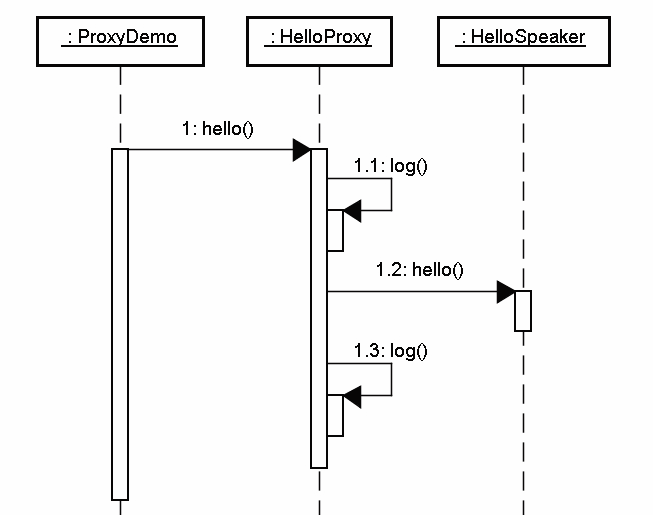

暂且先将 AOP 这个英文缩写名词放到一边，先从一个简单常见的例子来看一个议题，这个例子当 中含有日志（Logging）动作，程式中很常需要为某些动作或事件作下记录，以便在事后检视程 式运作过程或是作为除错时的资讯。
来看一个最简单的例子，当您需要在执行某些方法时留下日志讯息，直觉的，您可能会如下撰写：
package onlyfun.caterpillar;
import java.util.logging.*;
public class HelloSpeaker {
private Logger logger = Logger.getLogger(this.getClass().getName());
public void hello(String name) {
// 方法执行开始时留下日志
logger.log(Level.INFO, "hello method starts....");
// 程式主要功能
System.out.println("Hello, " + name);
// 方法执行完毕前留下日志
logger.log(Level.INFO, "hello method ends....");
}
}
在 HelloSpeaker 类别中，当执行 hello()方法时，您希望该方法执行开始与执行完毕时都能留 下日志，最简单的作法就是如以上的程式设计，在 方法执行的前后加上日志动作，然而记录的 这几行程式码横切入（Cross-cutting）HelloSpeaker 类别中，对于 HelloSpeaker 来说，日志 的这几个动作并不属于 HelloSpeaker 商务逻辑（显示"Hello"等文字），这使得 HelloSpeaker 增加了额外的职责。
想想如果程式中这种日志的动作到处都有需求，以上的写法势必造成您必须到处撰写这些日志动 作的程式码，这将使得维护日志程式码的困难度加大。如果需要的服 务（Service）不只有日志 动作，有一些非物件本身职责的相关动作也混入了物件之中（例如权限检查、交易管理等等）， 会使得物件的负担更形加重，甚至 混淆了物件本身该负有的职责，物件本身的职责所占的程式 码，或许还小于这些与物件职责不相关的动作或服务的程式码。
另一方面，使用以上的写法，若您有一日不再需要日志（或权限检查、交易管理等）的服务，那 么您将需要修改所有留下日志动作的程式码，您无法简单的就将这些相关服务从即有的程式中移 去。
可以使用代理（Proxy）机制来解决这个问题，在这边讨论两种代理方式：静态代理（Static proxy） 与动态代理（Dynamic proxy）。
在静态代理的实现中，代理物件与被代理的物件都必须实现同一个介面，在代理物件中可以实现 记录等相关服务，并在需要的时候再呼叫被代理的物件，如此被代理物件当中就可以仅保留业务 相关职责。
举个实际的例子来说，首先定义一个 IHello 介面：
package onlyfun.caterpillar;
public interface IHello {
public void hello(String name);
}
然后让实现商务逻辑的 HelloSpeaker 类别要实现 IHello 介面，例如：
package onlyfun.caterpillar;
public class HelloSpeaker implements IHello {
public void hello(String name) { System.out.println("Hello, " + name);
}
}
可以看到，在 HelloSpeaker 类别中现在没有任何日志的程式码插入其中，日志服务的实现将被 放至代理物件之中，代理物件同样也要实现 IHello 介面，例如：
package onlyfun.caterpillar;
import java.util.logging.*;
public class HelloProxy implements IHello {
private Logger logger =
Logger.getLogger(this.getClass().getName());
private IHello helloObject;
public HelloProxy(IHello helloObject) {
this.helloObject = helloObject;
}
public void hello(String name) {
// 日志服务
log("hello method starts....");
// 执行商务逻辑
helloObject.hello(name);
// 日志服务
log("hello method ends....");
}
private void log(String msg) {
logger.log(Level.INFO, msg);
}
}
在 HelloProxy 类别的 hello()方法中，真正实现商务逻辑前后可以安排记录服务，可以实际撰 写一个测试程式来看看如何使用代理物件。
package onlyfun.caterpillar;
public class ProxyDemo {
public static void main(String[] args) { IHello proxy =
new HelloProxy(new HelloSpeaker());
proxy.hello("Justin");
}
}
程式中呼叫执行的是代理物件，建构代理物件时必须给它一个被代理物件，记得在操作取回的代 理物件时，必须转换操作介面为 IHello 介面。
代理物件 HelloProxy 将代理真正的 HelloSpeaker 来执行 hello()，并在其前后加上日志的动作， 这使得我们的 HelloSpeaker 在撰写时不必介入日志动作，HelloSpeaker 可以专心于它的职责， 可以从图解的方式来更进一步看出代理机制的运作流程。

这是静态代理的基本范例，然而如您所看到的，代理物件的一个介面只服务于一种类型的物件，而且如果要代理的方法很多，您势必要为每个方法进行代理，静态代理在程式规模稍大时就必定 无法胜任，在这边介绍静态代理的目的，是在让您了解代理的基本原理。